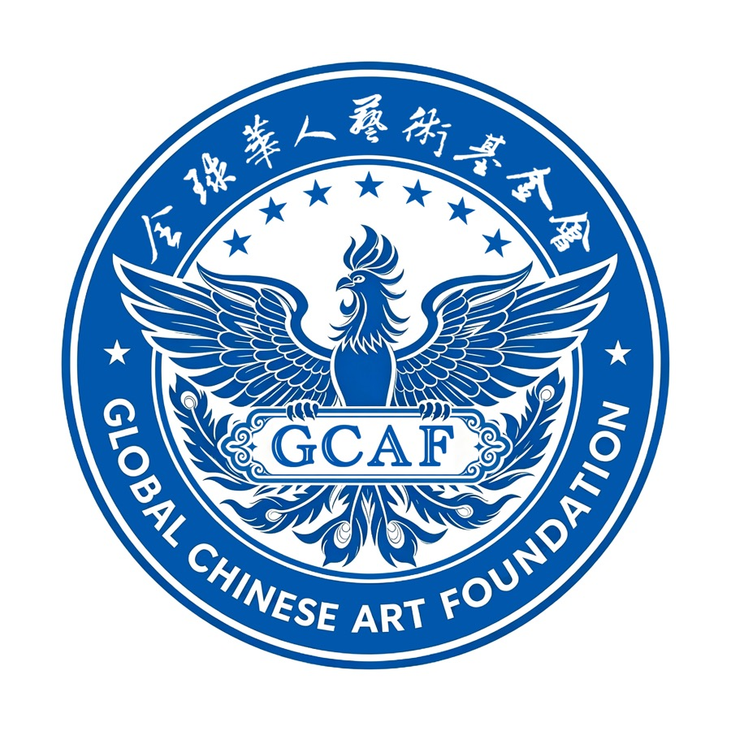
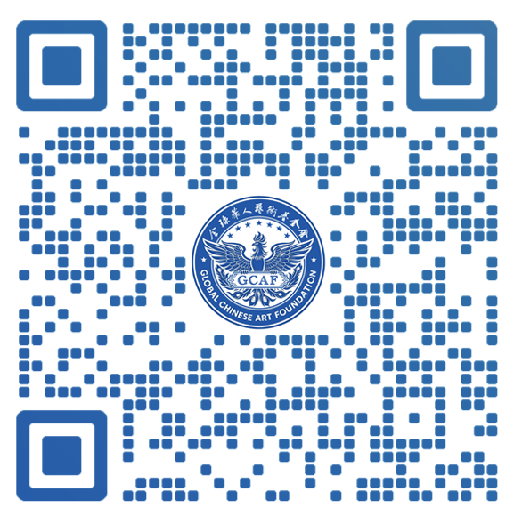

GCAF · OFFICIAL ARCHIVE

FOUNDATION · 01
GLOBAL CHINESE ART FOUNDATION
全球华人艺术基金会
以艺为桥 · 以文化人
立足全球 · 深耕华人文化领域
FOUNDATION PROFILE · 02
基金会简介
全球华人艺术基金会是立足全球、深耕华人文化领域的公益性艺术赋能平台，始终以传承中华艺术文脉、赋能华人艺术家成长、推动中外艺术双向交流、传播东方美学价值为核心使命。基金会汇聚全球各地华人艺术力量，联动艺术机构、行业专家、收藏圈层与国际文化平台，专注于中华优秀艺术的传承创新、当代华人艺术的推广孵化、国际文化艺术的互鉴互通，持续搭建专业化、国际化、公益化的艺术展示、交流、赋能与传播体系，助力华人艺术从本土走向世界舞台，提升中华文化的全球影响力与软实力。
自成立以来，基金会始终坚守“以艺为桥、以文化人”的发展理念，聚焦传统艺术活化、当代艺术创新、青年艺术家扶持、国际艺术交流、艺术公益普及五大核心板块，通过举办国际艺术巡展、学术研讨沙龙、艺术人才培育计划、跨界艺术合作、艺术公益项目等多元形式，挖掘优秀华人艺术资源，助力艺术家打破地域壁垒、对接国际视野，为全球华人艺术从业者提供全方位、常态化的成长与展示通道，推动华人艺术在新时代焕发全新生命力。
在深耕艺术赋能、践行文化传播的过程中，基金会深度携手知名当代艺术家宋轲，以艺术初心共振、文化使命同行，共同助力华人艺术的全球化传播与创新性发展。宋轲深耕艺术领域多年，兼具扎实的艺术功底、独特的创作视角与深厚的文化情怀，其作品扎根中华传统文化沃土，融合当代艺术审美与国际创作语言，打破传统与现代、东方与西方的艺术边界，既承载着中式美学的底蕴风骨，又兼具全球化的艺术表达，与基金会“传承文脉、创新表达、走向世界”的核心理念高度契合。
依托基金会的国际化平台资源与行业影响力，宋轲的原创艺术作品、艺术理念与创作成果得以在全球多区域落地展示、交流传播，让兼具东方底蕴与时代特色的华人艺术被更多国际受众认知、认可与喜爱。同时，宋轲以自身艺术积淀为依托，积极参与基金会艺术人才培育、艺术公益普及、中外艺术交流等核心项目，助力挖掘和扶持新锐华人艺术家，推动传统艺术的当代活化与创新演绎，为全球华人艺术生态的繁荣发展注入鲜活的原创力量。
未来，全球华人艺术基金会将持续深化与宋轲等优秀华人艺术家的深度战略合作，坚守文化自信、立足时代语境、放眼全球格局，持续整合优质艺术资源，搭建更高规格的国际艺术交流平台，孵化更多优质华人艺术作品，讲好新时代华人艺术故事，让中华优秀艺术文化在世界文化交融中绽放独特魅力，持续推动全球华人艺术事业蓬勃发展、薪火相传。
OFFICIAL ACCESS · 03
基金会二维码
扫描二维码，进入全球华人艺术基金会官方平台
